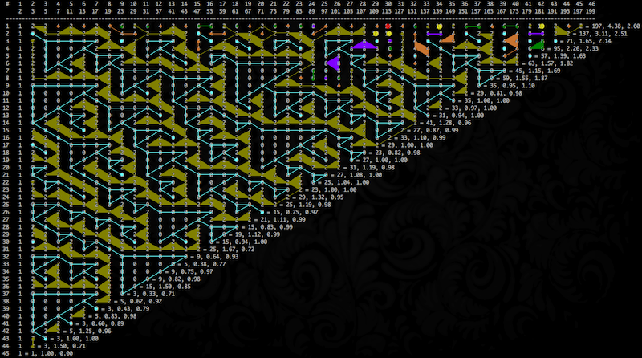
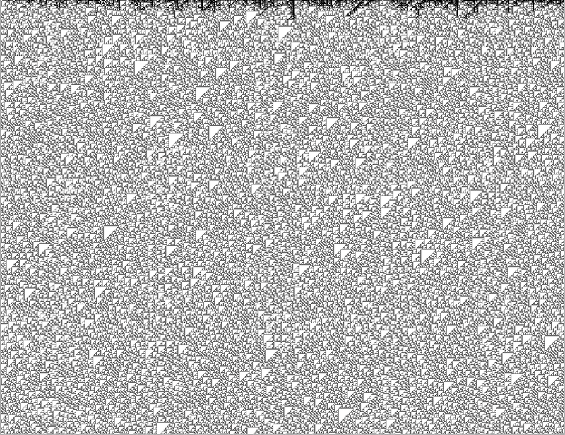

Primes, Gaps and Gaps of Gaps
The prime number sequence fascinates me. I am not sure why but exposing properties in it is exciting. Even if they are mundane and "obvious to everyone else", the fact that I can answer questions visually, sometimes thrills me.
tl;dr: gaps-of-gaps
Sometimes I already know the answer but want a picture.

Anyway, in my life-pursuit of exploratory nerd-investigation, I asked myself, "What are the gaps of the primes, followed by the gaps of those gaps, etc etc?" So I wrote up a handy bit of code, but noticed a curious property.
The code just considers gaps between successive primes, as absolute differences:
push @difference, abs($sequence[$n + 1] - $sequence[$n])
For each sequence, starting with the primes themselves, we compute the gaps between elements and use those gaps as the next sequence. Mundane, yes? But the patterns! Cool!
I tediously but anxiously drew (and "bucket-filled") the polygons for my little table from a black iTerm screen-shot in the GIMP. (I apologize but there is no magic here. I manually applied the lines and colors.)
The "flowing triangles" pattern should continue. But it appears, at the far right, that the pattern is beginning to break up, or as I suspect, evolve into another set of evolving patterns. I'll have to plot a bigger table.
I realize that I am illustrating an artifact, not some sort of revolution in number theory. I am just a curious cat. Maybe I'll submit it to the Prime Curios site. But maybe it's another one of those "obvious to everyone but me" things. ;-)
Update: My friend Luc saw my curious chart and rendered the graph that I had only imagined. His visualization is superior!

So this answers my main questions, "Does the zero triangle pattern persist?" and "Does the chart become "taken over with the growing complexity?"
Yes the zero triangle pattern does persist and in fact makes up the vast majority of the chart.
No the complex patterns to do not "take over" and break up the chart into increasingly less patterned fragments. In fact, the "complex patterns" are obviously restricted to the top few bands of gaps. This makes sense because the gaps grow smaller, the farther down the graph you go, until it's just 2s and 0s.
(This cascade of triangles is similar to this cellular automata. Or the right-hand-side of Wolfram Rule 30. Why?)